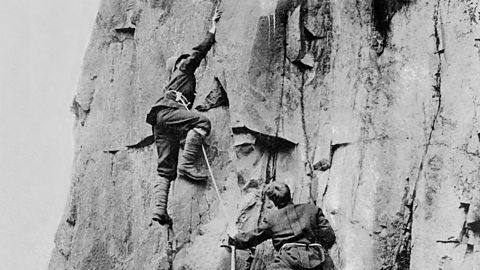

Rock climbing is a sport in which participants climb up, across, or down natural rock formations or indoor climbing walls. The goal is to reach the summit of a formation or the endpoint of a usually pre-defined route without falling. Rock climbing is a physically and mentally demanding sport, one that often tests a climber's strength, endurance, agility and balance along with mental control. Knowledge of proper climbing techniques and the use of specialized climbing equipment is crucial for the safe completion of routes.
Because of the wide range and variety of rock formations around the world, rock climbing has been separated into several different styles and sub-disciplines, such as scrambling, bouldering, sport climbing, and trad (traditional) climbing.
Rock climbing competitions have the objectives of either completing the route in the least amount of attempts, the least amount of time, or attaining the farthest point on an increasingly difficult route. Indoor rock climbing is typically split into three disciplines: bouldering, lead climbing, and top roping.
In early America, the cliff-dwelling Anasazi in the 12th century are thought to have been excellent climbers. Early European climbers used rock climbing techniques to reach the summits in their mountaineering exploits. In the 1880s, European rock climbing became an independent pursuit outside of mountain climbing.
Aid climbing, climbing using equipment that acts as artificial handhold or footholds, became popular during the period 1920–1960, leading to ascents in the Alps and in Yosemite Valley that were considered impossible without such means. However, climbing techniques, equipment and ethical considerations have evolved steadily. Today, free climbing, climbing using holds made entirely of natural rock while using gear solely for protection and not for upward movement, is the most popular form of the sport. Free climbing has since been divided into several sub-styles of climbing dependent on belay configuration
Over time, grading systems have also been created in order to compare more accurately the relative difficulties of the rock climbs. On August 3, 2016, the International Olympic Committee (IOC) formally announced that sport climbing would be a medal sport in the 2020 Summer Olympics. The event debut was postponed to 2021, due to COVID-19.
Aid Climbing: Still the most popular method of climbing big walls, aid climbers make progress up a wall by repeatedly placing and weighting gear that is used directly to aid ascent and enhance safety. This form of climbing is typically used when ascent is too technically difficult or impossible for free climbing.
Free Climbing: The most commonly used method to ascend climbs, Free climbing refers to climbs where the climber's own physical strength and skill are relied upon to accomplish the climb. Free climbing may rely on top rope belay systems, or on lead climbing to establish protection and the belay stations. Free climbing is generally done as "clean lead" meaning no pitons or pins are used as protection.
Bouldering: Climbing on short, low routes without the use of the safety rope that is typical of most other styles. Protection, if used at all, typically consists of a cushioned bouldering pad below the route and a spotter. Bouldering may be an arena for intense and relatively safe competition, resulting in exceptionally high difficulty standards.
Solo Climbing: It is what it sounds like, a style of climbing in which the climber climbs alone.
Lead Climbing: Lead climbing is a climbing technique where the lead climber ascends with the rope passing through intermittent anchors that are below them, rather than through a top anchor, as in top-rope climb.
Multi-Pitch Climbing: The climbing rope is of a fixed length; the climber can only climb the length of the rope. Routes longer than the rope length are broken up into several segments called pitches; this is known as multi-pitch climbing. Once both climbers are at the top anchor, the leader begins climbing the next pitch, and so on, until the top of the route is reached.
Sport Climbing: The act of climbing single- or multi-pitch routes, protected by permanently-fixed bolts and anchors drilled into the rock, using a rope and the aid of a belayer. Unlike traditional rock climbing, sport climbing involves the use of protection (bolts) placed with power drills or on rappel or permanent anchors which are attached to the rock walls.
Traditional (Trad) Climbing: Involves rock climbing routes in which protection against falls is placed by the climber while ascending.
Top Rope Climbing: Commonly known as top roping, top rope climbing is climbing in which a climber is belayed from the ground or the base of the route. A belay system resembling a pulley in which an anchor has been created at the top of a climb, through which the rope runs through from the belayer on the ground, to the climber on the ground.
Jug:A large open hold. Typically in the shape of a V.
Sloper: A negative smooth hold, typically in the shape of a ball or half moon.
Pockets: A hold that has a hole in it with just enough room for one or two fingers to fit inside of it.
Horn: A protruding hold that is typically smooth like a sloper. These are held by wrapping your arm, or entire palm around the hold.
Pinch: A pinch can either be used vertically or horizontally. With a pinch hold, the muscles between the index finger and thumb are used.
Crimp/Crimper: A crimp hold allows climbers to use their fingertips to grab edges; the fingers arch.
Volume: Volumes are wood or fiberglass structures that are supported by the climbing wall. They are generally giant, prism-like features that are introduced to change the dynamics of the wall
Crack: A gap between two opposing walls that a climber can jam their fingers, fist, or other body parts in to pull themselves up
See also..